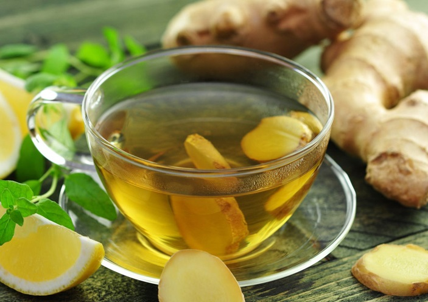
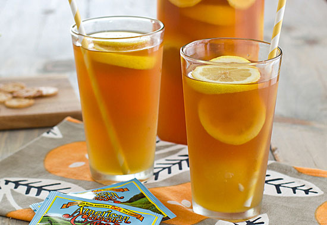
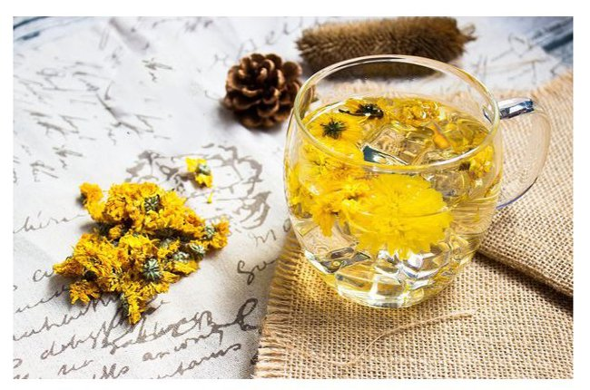
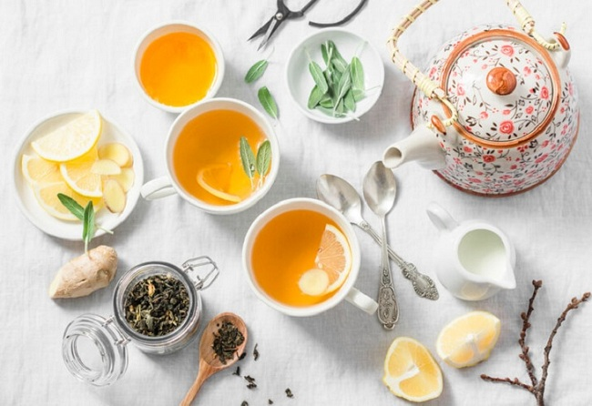
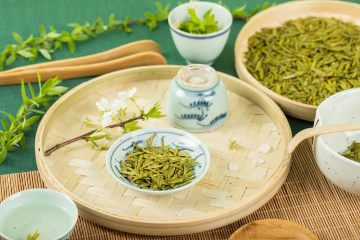
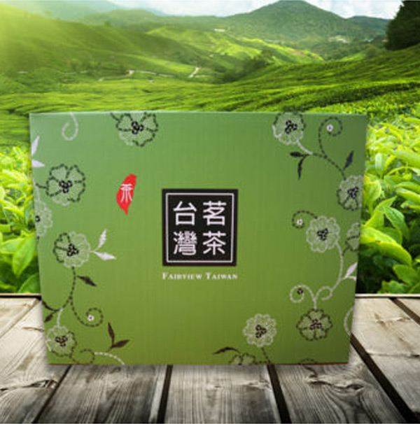
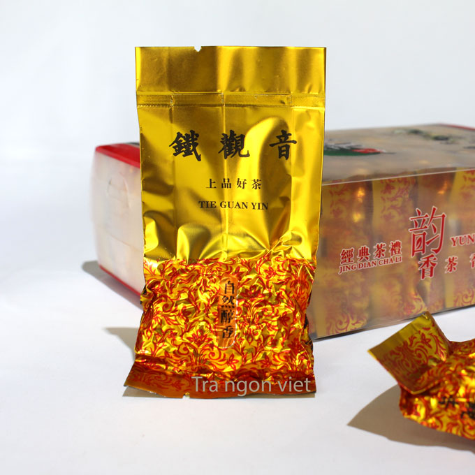
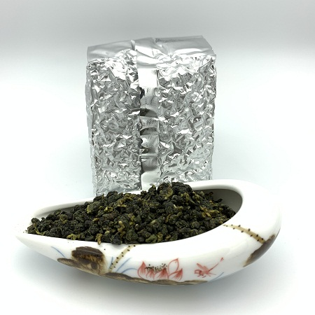

Giới thệu
Một chữ “Trà” hơn vạn lời nói, không chỉ đơn thuần là thức uống, đó còn là bản sắc, tinh hoa giá trị Việt. Với mong muốn mang tới tay người tiêu dùng những loại trà Việt thơm, ngon, sạch nhất, Hải Trà đã chính thức được thành lập. Bằng sự nỗ lực, nhiệt huyết và đam mê cháy bỏng với trà Việt, chúng tôi đã tìm tòi, nghiên cứu và cho ra đời hệ thống bán trà “sạch” đúng nghĩa.
Tầm nhìn – Sứ mệnh của Hải Trà
Đi lên từ chính những điều tuyệt vời nhất, Hải Trà mong muốn đem món quà thiên
nhiên ban tặng cho dải đất hình chữ S – Trà Thái Nguyên lan tỏa và gõ cửa từng
hộ dân Việt. Ngay từ khi bắt đầu thành lập, trải qua muôn vàn khó khăn và thử
thách, bao hoài bão, ấp ủ cuối cùng đã “phá kén”, trở thành hệ thống Hải Trà
rộng khắp, có mặt trên nhiều tỉnh thành lớn khắp đất nước.
Chúng tôi luôn trăn trở, làm thế nào để đưa những loại trà ngon, sạch nhất, đúng nghĩa là “đặc sản” tới tận tay người tiêu dùng. Chính vì vậy, trước khi thành lập Hải Trà, chúng tôi đã dày công nghiên cứu thị trường, không quản gian nan về tận “vựa trà” Thái Nguyên để tìm hiểu, tìm nguồn cung cấp trà chất lượng nhất.
Bài viết mới
|  | Hướng dẫn cách pha trà gừng giải cảm tại nhà, đơn giản, dễ làm |
|  | Trà xanh mật ong và những công dụng bất ngờ cho cơ thể |
|  | Trà hoa cúc đường phèn: Tác dụng và một số lưu ý khi dùng |
|  | 15 loại trà cao huyết áp phổ biến dành cho người cao tuổi |
|  | Trà Long Tỉnh bí quyết lựa chọn, bảo quản và cách pha đúng cách |
Sản phẩm mới
 |
Trà Tân Cương Thái Nguyên 500gr 1.000.000đ |
|
Trà Tân Cương Thái Nguyên 300gr 1.000.000đ |
|
Trà Tân Cương Thái Nguyên 100gr 1.000.000đ |
|  | Bột trà xanh Thái Nguyên 300.000đ |
|  | Trà thiết quan âm loại 2 – 300g 200.000đ |
|  | Trà ô long trắng thượng hạng loại 2 – 100g 250.000đ |
 |
Trà ô long lon thiếc vàng loại 2 – 150g 1.000.000đ |
 |
Trà ô long Matcha loại 3 – 1kg 125.000đ |